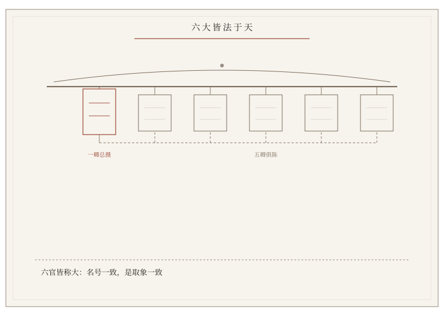

曲礼下 · 二·四十四 · 第 167 课
天子设天官，先列六大：大宰、大宗、大史、大祝、大士、大卜，各守六典。注「典，法也。此盖殷时制也，周则大宰为天官，大宗曰宗伯」。
说什么事：六官之名与其所以名。
落在哪一层：礼。论官制之取象。
为何编在此位：上节论内官，此节起外官。内先外后，正是疏所说的治法次序。
【经】天子建天官，先六大，曰大宰、大宗、大史、大祝、大士、大卜，典司六典。
【注】典，法也。此蓋殷時制也，周則大宰為天官，大宗曰宗伯，宗伯為春官，大史以下屬焉，大士以神仕者。
【疏】此以下是殷礼，所明异于周法……郑唯指为殷礼也。然天官以下，殷家六卿，何者？大宰、司徒、司马、司空、司士、司寇是也。但周立六卿，放天地四时，而殷六卿所法，则有异也。殷以大宰为一卿，以象天时，司徒以下五卿法于地事……焦氏答曰：「殷立天官，与五行其取象异耳。是司徒以下法五行，并此大宰，即为六官也。但大宰既尊，故先列大宰，并显大宰之下隶属大宰之官。既法于天，故同受大名，故云『先六大』：大宰一、大宗二、大史三、大祝四、大士五、大卜六也。」「典司六典」者，结上也。上「典」是守典，下「典」是典则之典，言立此六官，以守主于六事之法。
建 立也。与下节「天子之五官」不云建者相别。
六大 六官之名皆冠「大」。疏「既法于天，故同受大名」。
典司 典，守也；司，主也。上典为守典，下典为典则。
大士 注「以神仕者」。疏「与大祝大卜相连，皆主神之士」。
殷制 注「此盖殷时制也」。盖者，疑而未定之辞。
天子设立天官，先列六大：大宰、大宗、大史、大祝、大士、大卜，各守六种法度。
六官皆称「大」，皆主神事，皆法于天。此节的秩序感极强：先立与天相接的那一层，再及其余。一个朝廷最上面坐的，不是管人的，是管天的。
第一层 六大之同 大宰、大宗、大史、大祝、大士、大卜，名皆冠「大」。疏「既法于天，故同受大名」——名号的一致，是取象的一致。
第二层 主神之官居首 大祝、大士、大卜皆主神事，与宗、史并列于大宰之下。人事之官（司徒以下）反在其后。此见殷礼之重神。
第三层 典司二字 疏分辨最细：上「典」是守典，下「典」是典则之典。立此六官，是使他们守六事之法，不是使他们立法。
第四层 殷周之异 注以周制对勘：周以大宰为天官，大宗改称宗伯而为春官。同一职，两代之名不同。读此节须知所记为殷，不可径当周礼。
与今日何干 一个组织的首脑部门，往往不是业务部门，而是管意义、管典章的那一个。此节的次序，至今可辨。
| 左 | 右 |
|---|---|
| 天子建天官 | 先立与天相接者 |
| 先六大 | 大宰、大宗、大史、大祝、大士、大卜 |
| 典司六典 | 上典守典，下典典则 |
| 同受大名 | 名号一致，取象一致 |
| 此盖殷时制 | 周则大宰为天官 |
| 大士以神仕者 | 与祝卜相连，皆主神事 |
画一道横梁，梁下悬六枚等距的小方牌，牌面皆空白、牌上各一道横线（示「大」字之义）；最左一枚稍高、其下垂一道细线连至其余五枚的上缘（示大宰总摄）。梁上方画一条弧线（示「法于天」），弧线中央一枚小圆。六牌之下另有一条极淡的横线作结。不写文字。赭色只用在最左那枚稍高的方牌上。
